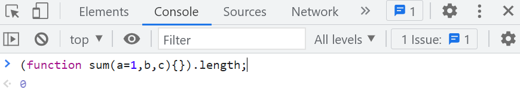

ES6 箭头函数 和 对象自面量增强，大厂面试真题解析
一、箭头函数
我们先来了解什么是箭头函数，箭头函数的结构，以及如何将一般函数改写成箭头函数
- 引入箭头函数有两个方面的作用：更简短的函数并且不绑定this
什么是箭头函数
- 箭头函数也是函数，与之前学过的 ES5 中的 function 关键字定义的函数写法不同
- ES6 规定了可以使用 “箭头”
=>来定义一个函数，语法更加简洁。不用再书写function关键字- 箭头函数的结构:
const/let 函数名 = (参数 )=> 函数体
- 如何将一般函数改写成箭头函数？
// 箭头函数省略了function关键字，通过箭头 => 定义函数- 在 ES5 中我们学习过两种函数形式（函数声明形式、函数表达式形式）
// 声明形式 function sum() {} // 函数表达式形式 var sum = function () {}; // 函数表达式形式 -> 箭头函数 const sum = () => {};
注意：
var和function声明的变量和函数会存在变量和函数声明提升，而let和const声明的变量是不存在变量提升的。- 所以用
let和const声明的变量保存的箭头函数，一定要在声明后才能使用//函数声明 sum1(1, 2); //3 function sum1(a, b) { console.log(a + b); }
//函数表达式:sum2在预编译时是作为一个变量，值为undefined,如果在声明前作为函数调用，会报错
sum2(2, 3); //报错
var sum2 = function (a, b) {
console.log(a + b);
};
//const、let没有变量提升
sum3(4, 5);//抛出引用错误
const sum3 = (a, b) => {
console.log(a + b);
};
箭头函数的注意事项
我们知道箭头函数比普通函数写起来更简洁，当满足一定条件的时候，箭头函数还可以写的更加简洁。
单个参数 ：单个参数可以省略圆括号
// 单个参数 const sum = x => { return x + 1; }; console.log(sum(1)); // 2- 如果使用vscode，则会自动加上
无参数或多个参数：不能省略圆括号
// 无参数，不能省略圆括号 const sum = () => { return 2 + 3; }; console.log(sum()); // 5// 多参数，不能省略圆括号
const sum = (a, b) => {
return a + b;
};
console.log(sum(2, 3));单行函数体：可以同时省略
{}和returnconst sum = (a, b) => { return a + b; // 函数体内只有一条语句 };// 以上单行函数体，可以同时省略 {} 和 return
const sum = (a, b) => a + b;
console.log(sum(2, 3)); // 5单行对象：（同属于单行函数体，会比较特殊）
- 如果箭头函数返回单行对象，可以在
{}外面加上()，让浏览器不再认为那是函数体的花括号 - 并且可以省略
return
// 单行对象 const sum = (a, b) => { return { value: a + b, }; }; console.log(sum(2, 3)); // {value: 5} //简化： const sum = (a, b) => ({ value: a + b }); console.log(sum(2, 3)); //{value: 5}- 如果箭头函数返回单行对象，可以在
单行数组
- 也属于单行函数体，一样可以省略花括号和
return
const sum = (a, b) => { return [a, b]; }; console.log(sum(2, 3)); // [2, 3]// 简写
const sum = (a, b) => [a, b];
console.log(sum(2, 3)); // [2, 3]- 也属于单行函数体，一样可以省略花括号和
箭头函数的嵌套简写
function sum(a) { return function fn1(b) { return function fn2(c) { return function fn3(d) { return a + b + c + d; }; }; }; } console.log(sum(1)(2)(3)(4));//10// 改写用箭头函数
const sum2 = (a) => (b) => (c) => (d) => a + b + c + d;
console.log(sum2(1)(2)(3)(4));//10>不管箭头函数嵌套几层，只要记住，有几个`=>`就有几个箭头函数，`=>`函数**左边是参数，右边是函数体**
普通函数（非箭头函数）中的 this 指向
普通函数（非箭头函数）中的
this指向把函数当成方法调用的对象，谁把函数当成方法调用，this 指向谁。
- 具体不同场景下函数（非箭头）函数中 this 指向，如下表：
| 函数的调用方式 | this 指向(非严格模式) | this 指向（严格模式） |
|---|---|---|
| 全局作用域下 | window | window |
| 函数() | window | undefined |
| 对象.函数() | 对象 | 对象 |
| IIFE 立即执行函数 | window | undefined |
| 数组[下标 ]() | 数组 | 数组 |
| fn.call(thisArg,arg1,arg2) | thisArg | thisArg |
| fn.apply(thisArg，arry) | thisArg | thisArg |
| fn.bind(thisArg，arg1,arg2) | thisArg | thisArg |
| 定时器中的回调函数 | window | window |
| DOM 事件处理函数 element.onclick=function(){ // this指向 } | element | element |
| var obj=new 函数() | obj | obj |
- 全局作用域下
// 全局作用域下 console.log(this); //window
函数()自调用// 函数() "use strict"; function sum() { console.log(this); } sum(); // 严格模式下结果为 undefined 非严格模式下 window对象.函数()// 对象.函数() const obj = { name: "清心", getName: function () { console.log(this); }, }; obj.getName(); // {name: '清心', getName: ƒ}IIFE立即执行函数// IIFE 立即执行函数 "use strict"; (function () { console.log(this); // 严格模式下结果为 undefined 非严格模式下 window })();数组[下标 ]()// 数组[下标 ]() function fn() { console.log(this); } const arr = [fn, 1, 2];arr0; // [fn, 1, 2]
fn(); // window函数调用 call、apply、bind 方法
// 函数调用call,apply,bind方法 const obj = { a: 1, b: 2, }; function sum(a, b) { console.log(this.a + this.b); console.log(this); } sum.call(obj, 3, 4); // 3 obj sum.apply(obj, [3, 4]); // 3 obj let fn = sum.bind(obj); fn(); // 3 obj回调函数
// 回调函数 "use strict"; setTimeout(function () { console.log(this);// window }, 1000);const arr = [1, 0, 3, 7, 5];
let result = arr.find(function (value, index, arr) {
console.log(this); // window
return value > 2;
});
console.log(result);//3事件处理函数
// 事件处理函数 const box = document.querySelector(".box"); box.onclick = function () { console.log(this); // <div class="box">点击我</div> };构造函数中
// new 函数() function Point(x, y) { this.x = x; this.y = y; console.log(this); // {x: 2, y: 3} } const point = new Point(2, 3);分析以下代码中的 this 指向
// 判断以下函数中this指向谁 ？ function sum() { console.log(this); } // 声明一个 calc 计算器对象，add为对象的属性名，sum为上边的函数名 const calc = { add: sum, }; calc.add(); // {add: ƒ} ，this 指向 calc 对象// 根据我们上边学过的，谁调用就指向谁，因此 this 指向 calc 对象
// 判断以下this的指向
const adder = calc.add;
adder(); // undefined -> window（在非严格模式下，浏览器帮我们将this指向从 undefined 转化成了 window）
箭头函数中的 this 指向
箭头函数中没有自己的
this，在箭头函数中访问this，需要沿着作用域链向外查找。const calc = { sum: () => { console.log(this); }, }; calc.sum(); // window
分析以上代码，思考：
为什么
calc.sum()调用函数时this的指向为window？我们知道箭头函数没有自己的this，那为什么当前的this会指向window呢 ？
这时，就需要结合我们前面学过的作用域链的机制来分析了 。
- 首先，箭头函数没有自己的
this，我们通过calc对象来调用sum()方法时（即：calc.sum();），就会执行console.log(this);- 这时 ，就会先在当前的箭头函数执行形成的函数作用域中来查找
this，而箭头函数又没有自己的this因此，在当前作用域中就找不到this。根据作用域链的机制，就会往外层寻找- 它的外层是
calc对象，我们知道对象没有作用域，再往外找，就是全局作用域了- 因此，当
console.log(this);就找到了全局作用域中的this，全局作用域中的this即指向window了
- 练习以下案例，深入分析函数中的 this 指向
// "use strict"; const calc = { add: function () { const adder = () => { console.log(this); }; adder(); }, }; calc.add(); // {add: ƒ} this指向 calc对象
//不直接调用，而是赋值给一个新的函数
const addFoo = calc.add;
addFoo(); // undefined -> window（在非严格模式下，浏览器帮我们将this指向从 undefined 转化成了 window）
// 严格模式下，this 指向 undefined
//相当于：
const addFoo =function () {
const adder = () => {
console.log(this);
};
adder();
},
calc.add();：调用calc对象里的add方法，它是一个普通函数，按照谁调用this就指向谁的原则，现在add函数中的this指向calc；- 调用
add方法时，它里面的箭头函数也自动调用了，需要打印this，而箭头函数没有this，所以就会向外找，于是就拿到它的外层函数add的this：calc
- 调用
addFoo();，相当于调用function函数，它自己调用自己，没有this指向，所以需要向外找，在全局作用域里找到window(严格模式下，this 指向 undefined)- 调用
add方法时，它里面的箭头函数也自动调用了，需要打印this，而箭头函数没有this，所以就会向外找，于是就拿到它的外层函数function的this：window,(严格模式下，this 指向 undefined)
不适用箭头函数的场景
我们通过前边的学习发现，使用箭头函数用起来省时省力，非常方便 。在以后的 ES6 代码中，就可以使用箭头函数来代替一般的函数了。但并不是在所有的地方都可以使用箭头函数
以下几种情况不适用箭头函数：
- 作为构造函数
- 需要 this 指向调用对象的时候
- 需要使用 arguments 的时候
- 作为构造函数
// 直接报错 Person不是构造函数const Person = () => {}; new Person(); // Uncaught TypeError: Person is not a constructor
因为
- 箭头函数没有
this，而构造函数最重要的就是this，在实例化构造函数之后它里面的this指向就应该指向它实例化之后得到的实例对象，而箭头函数本身没有this，我们肯定就不能使用箭头函数来作为构造函数
- 需要 this 指向调用对象的时候
事件处理函数中的
this一般都是指向绑定事件的对象，所以事件处理函数不要写成箭头函数// 使用最原始的方式 document.onclick = function () { console.log(this); // document }; // 当点击浏览器任意位置是，this指向 document// 使用绑定监听事件的方式
document.addEventListener(
“click”,
function () {
console.log(this); // document
},
false
);
// 当点击浏览器任意位置是，this指向 document// 如果使用箭头函数时，箭头函数本身没有this
// 根据作用域链的机制，就会往外层作用域中找。找到全局作用域中就指向 window了
document.addEventListener(
“click”,
() => {
console.log(this); // window
},
false
);对象方法中的
this是需要指向调用方法的对象，所以对象的方法不要写成箭头函数// 对象的方法使用箭头函数 const obj = { num: 1, sayHello: () => { console.log(this.num); // undefined }, }; obj.sayHello();// 对象方法使用普通函数
const obj = {
num: 1,
sayHello: function () {
console.log(this.num); // 1
},
};
obj.sayHello();
- 需要使用 arguments 的时候
// 如果将以上函数修改成 箭头函数- 在 ES6 中箭头函数里没有
arguments
// 使用 arguments 来接受不确定实参，然后循环遍历arguments类数组 function sum() { console.log(arguments); } sum(1, 2, 3); // Arguments(3) [1, 2, 3, callee: ƒ, Symbol(Symbol.iterator): ƒ]
const sum = () => {
console.log(arguments); // Uncaught ReferenceError: arguments is not defined
};
sum();
// 箭头函数中没有arguments - 在 ES6 中箭头函数里没有
注：
将以上函数修改成箭头函数后，报错 arguments 未定义。
- 因为，在
ES6中箭头函数里没有arguments。那如果有不定参数的需求该怎么办呢 ？- 既然 ES6 的箭头函数中取消了 arguments ，就可以使用其它的方式来解决
- 我们接下来会学到剩余参数就能解决，在一定程度上代替
arguments，如果一定要用，还是使用传统的方式就好。
适合箭头函数的场景
箭头函数因为书写的便利，在很多场景下都可以代替原来的函数，除此之外还因为箭头函数没有自己的
this这一特性，在实际开发中也有广泛的应用。以下情况，我们可以把普通函数改写成简单的箭头函数
- 函数中不会用到
this，则可以将此函数改成箭头函数- 希望在当前函数中的
this指向外层作用域中的this时，可以将此函数改成箭头函数
- 函数中不会用到 this
以下的**
IIFE立即执行函数**中，并没有用到this，所以this指向什么都没关系//随机生成颜色 const color = (() => { const arr = ["red", "yellow", "green", "blue"]; const n = (Math.random() * arr.length) >> 0; return arr[n]; })(); console.log(color);当函数()的方式自调用时，其内部也没有用到 this，所以 this 指向什么都没关系
var sum = (a, b) => a + b; console.log(sum(1, 2)); // 3常见 API 的回调函数，可以将其改写成箭头函数
const arr = [1, 3, 2, 7, 4, 5, 6]; arr.sort(function (a, b) { console.log(this); return a - b; }); console.log(arr); // [1, 2, 3, 4, 5, 6, 7]// 箭头函数
const arr2 = [1, 4, 3, 7, 8, 12, 76];
arr2.sort((a, b) => a - b);
console.log(arr2); // [1, 3, 4, 7, 8, 12, 76]
- 希望函数中 this 指向外层作用域 this
我们一般希望在回调函数中拿到外层作用域中的
this，因为箭头函数没有自己的this，所以箭头函数中的this默认就指向了外层作用域中的this。
- 案例1：点击元素，元素在几种不同颜色之间随机切换
- 普通函数：
<style> .box { width: 100px; height: 100px; background-color: red; } </style> <div class="box"></div> <script> const box = document.querySelector(".box"); box.onclick = function () { const that = this; // 保存this setInterval(function () { const arr = ["red", "blue", "yellow", "green"]; const len = arr.length; // that指向 box that.style.backgroundColor = arr[(Math.random() * len) >> 0]; }, 500); }; </script>- 使用普通函数时，要在定时器的回调函数中拿到外层（事件处理函数）中的
this，则需要在事件处理函数中添加变量that来保存this，然后在回调函数中来使用
- 如果将定时器中的回调函数，改写成箭头函数，就不需要增加中间变量（代码如下）
<style> .box { width: 100px; height: 100px; background-color: red; } </style> <div class="box"></div> <script> const box = document.querySelector(".box"); box.onclick = function () { setInterval(() => { const arr = ["red", "blue", "yellow", "green"]; const len = arr.length; // 箭头函数中没有自己的this，所以沿着作用域链向外找,找到了事件处理函数中的this // 事件处理函数中的this指向绑定事件的对象box this.style.backgroundColor = arr[(Math.random() * len) >> 0]; }, 500); }; </script>
- 案例2：当点击一个按钮时，从零开始计数
const timer = {<style> body { padding: 200px 0 0 300px; } button { width: 70px; height: 70px; font-size: 20px; cursor: pointer; } span { font-size: 30px; padding: 30px; } </style> <button id="btn">点击开始</button> <span id="result">0</span> <script> // 获取按钮 const btn = document.getElementById("btn"); // 获取存放数字的容器 const result = document.getElementById("result");
time: 0,
start: function () {
btn.addEventListener(
“click”,
function () {
setInterval(function () {
console.log(this); // undefined -> window（在非严格模式下，浏览器帮我们将this指向从 undefined 转化成了 window）
this.time++;
result.innerHTML = this.time;
}, 1000);
},
false
);
},
};
timer.start();- 当我们点击开始按钮时，数字变成 `NaN` 了，因为定时器`setInterval(function(){})` 中 `this` 指向 `window` ，我希望这里的 `this` 指向是 `timer` 对象才对（我们需要用到 `timer` 对象中的 `time` 属性）。 >本质就是，这里的 this 指向只要是 timer 就能正常运行了
- 传统方法是声明一个
that变量来保存我们想要的this，然后再需要对应this的时候，替换成我们声明的变量即可实现- 在
ES6中，箭头函数没有自己的this，我可以通过这个特性来实现：<script> // 获取按钮 const btn = document.getElementById("btn"); // 获取存放数字的容器 const result = document.getElementById("result");
const timer = {
time: 0,
start: function () {
console.log(this); // this指向 timer ，找到了，timer.start(); 调用start()方法，即指向 timer对象
btn.addEventListener(
“click”,
() => {
console.log(this); // 箭头函数没有自己的this ，往上一层找
setInterval(() => {
console.log(this); // 箭头函数没有自己的this ，往上一层找
this.time++;
result.innerHTML = this.time;
}, 1000);
},
false
);
},
};
timer.start();
二、箭头函数面试题
- 箭头函数可以用 call 或者 apply 改变 this 指向吗 ？（百度）
解题思路：
- 说说箭头函数中的
this指向，普通函数中的this指向。 - 为什么普通函数调用
call和apply能改变this，说下其实现原理，能否手写实现下call方法？ - 结合手写的
call方法，来说明箭头函数不能改变this指向的本质原因。
- 说说箭头函数中的
答：
- 箭头函数不能用
call和apply改变this指向，因为箭头函数中没有自己的this，箭头函数中的this指向箭头函数声明时所在的作用域中的this。而普通函数内部的this，指向把函数当成方法调用的对象。- 普通函数调用
call和apply能改变函数内部的this指向，其本质是把函数当成call或apply后面第一个参数的方法来调用。
obj.方法()方法为普通函数，其内部的 this 指向 objconst obj = { a: 1, b: 2, };function sum(a, b) {
console.log(this.a + this.b);
}
sum.call(obj, 4, 5); // 相当于 obj.sum(4,5) ，sum为普通函数，this指向被调用的对象,即相当于/*
obj={
a:1,
b:2,
sum:function(a,b){
console.log(this.a+this.b); // this指向obj
}
}
*/obj.方法()方法为箭头函数，其 this 指向箭头函数声明时所在作用域中的 thisconst obj = { a: 1, b: 2, };const sum = (a, b) => {
console.log(this.a + this.b);
};
sum.call(obj, 4, 5); // 相当于 obj.sum(4,5) 但sum是箭头函数，this指向window,即相当于/*
obj={
a:1,
b:2,
sum:(a,b)=>{
console.log(this.a+this.b); // this指向window
}
}
*/以下代码是根据此原理来实现手写
call方法call内部实现原理：把调用call的函数当成call方法的第一个参数的方法来使用
// 手写call方法 Function.prototype.call = function (context, ...args) { // ....相关判断省略 // 创建一个唯一的值，用来当做对象的属性名 const key = Symbol(); // call是一个普通函数，内部的this指向调用call方法的对象 // 把调用call方法的对象绑定成 call方法第一个参数的方法 context[key] = this; // 调用方法,并将返回值保存在变量中 let result = context[key](...args); //删除被新增的属性 delete context[key]; // 返回结果 return result; };
- 箭头函数和普通函数的区别（招银、百度、知乎、字节）
- 箭头函数和普通函数主要有以下几个方面的区别
区别 说明 this 指向 箭头函数中没有自己的 this，箭头函数中的 this 指向箭头函数声明时所在的作用域中的 this arguments 箭头函数中没有 arguments，如果需要接受对应的实参列表，可以用 rest 剩余参数 构造函数 箭头函数不能用做构造函数，不能使用 new 调用 prototype 箭头函数没有原型对象 prototype 这个属性 super 因为箭头函数不能用做构造函数，也就没有自己的 super yield 命令 因为箭头函数不能用作 Generator 函数，所以不可以使用 yield 命令
- 箭头函数和普通函数主要有以下几个方面的区别
三、对象字面量增强
对象字面量是什么 ？
对象字面量就是对象的一种写法，对象一般有两种写法
通过实例化构造函数来生成对象
// 实例化构造函数生成对象 const student = new Object(); student.username = "清心"; student.age = 18; student.code = function () {};对象字面量方式创建对象
// 对象字面量 const student = { username: "清心", age: 18, code: function () {}, };
- 我们日常开发中，很少使用实例化构造函数来生成对象，更多使用对象字面量的方式来生成对象，因为它更直观，我们用的也更多。
属性的简洁表示法 - 增强
当对象属性的键名和变量或常量名一样的时候，可以只写一个
let username = "清心"; let age = 18; const obj = { username: username, age: age, }; console.log(obj); // {username: '清心', age: 18}// 以下简写形式，当属性名和变量名相同时，可以只写一个
const obj = {
username, // 相当于 username: username
age, // 相当于 age: age
};
console.log(obj); // {username: ‘清心’, age: 18}这种简写用于函数的返回值会非常方便
function getCurrentDate() { var nowDate = new Date(); var year = nowDate.getFullYear(); var month = nowDate.getMonth() + 1; var date = nowDate.getDate();return { year, month, date }; // 属性的简写形式
}
console.log(getCurrentDate()); // {year: 2023, month: 1, date: 5}
方法的简洁表示法-增强
- es6 中，对象的方法可以省略冒号和
function关键字const obj={ say: function(a,b){ console.log("123"); }, }; //简写 const obj = { say(a, b) { console.log("123"); }, }; obj.say(); //123
const student = { name: "清心", code: function () { console.log(`${this.name}正在写代码`); }, }; student.code(); // 清心正在写代码
// 以下是简写形式，可以省略方法名后面的:和function关键字
const student = {
name: “清心”,
code() {
console.log(${this.name}正在写代码);
},
};
student.code(); // 清心正在写代码
- 方法的简法，对于 get 获取函数和 set 设置函数也适用
ES5中get和set函数是写在Object.defineProperty方法的第三个参数中const obj = { _sex: "男", }; Object.defineProperty(obj, sex, { get: function () { return this._sex; }, set: function (value) { this._sex = value; }, });ES6支持的最完美的get和set函数的简写形式const obj = { _sex: "男", // get函数的简写 get sex() { return this._sex; }, // set 函数的简写 set sex(value) { this._sex = value; }, };
方括号语法 - 增强
ES5中方括号语法的用法- 在
ES5中定义对象属性有两种方式：点符号法和方括号表示法
const obj = {}; // 方式一：点符号法 obj.属性名=属性值 obj.name = "清心"; // 等价于 obj['name']='清心' // 方式二：方括号表示法 obj[变量]=属性值, 这种情况变量的值为属性名 let myage = "age"; obj[myage] = 18; // 这种情况只能使用方括号法- 在
- 但
ES5中，对象字面量写法中不能使用[]方括号法来定义属性名const obj = { name: "清心", ["myage"]: 19, // ES5中不允许这种写法 };现在是因为es6才可以用的
- ES6 中方括号语法 - 增强
- 在 ES6 中允许字面量定义对象时使用
[]方括号的方式来定义属性名 - 方括号中可以放的内容和模板字符串中的注入
${}中可以放的内容一样，可以放值或通过计算可以得到值的（表达式）都可以 - 但其实方括号只能放字符串和
Symbol，除Symbol类型以外的值或通过计算可以得到值的（表达式）都会被转化为字符串
- 在 ES6 中允许字面量定义对象时使用
let person = { [1 + 3]: 3, [{}]: 4, [[]]: 5, [function () {}]: 6, [(foo = () => {})]: 7, ["s" + "sex"]: 8, }; console.log(person); for (let key in person) { console.log(key); console.log(typeof key); //全都是 string } // "4" "[object Object]" "" "function () {}" //"() => {}" "ssex"
const s = Symbol();
let animal = {
[s]: 19,
};
const key = Object.getOwnPropertySymbols(animal);
console.log(key); //[Symbol()]
console.log(typeof key); //object
- 只能采用方括号表示法的情况
- 在获取属性时，当属性名不是合法标识符时，就只能采用方括号表示法。
- 在获取属性时，如果使用变量或者常量保存属性名时，就只能采用方括号表示法
const obj = { age: 18, "123username": "icoding", }; // 123username 不是合法标识符，所以只能用方括号方式来获取 console.log(obj["123username"]); // 定义一个常量property，值为age const property = "age"; // 当属性为变量或常量时，必须通过方括号语法，即：obj[property]，使用property保存的值age，所以等价于obj.age这种写法 console.log(obj[property]); // 18 // 当属性为变量或常量时，如果通过点语法，会将property看做字符串，表示访问obj对象下的property属性，而不是访问obj下的age属性，而obj对象中没有property属性，所以返回结果为undefined console.log(obj.property); // undefined
- 使用字面量方式创建对象时，如果使用变量或者常量保存属性名时，就只能使用方括号语法
let username = "username"; const age = "age"; const obj = { [username]: "清心", [age]: 18, }; console.log(obj); // {username: '清心', age: 18}
- 方括号语法和点语法的区别
// 使用点语法给对象字面量添加属性- 点语法是方括号语法的特殊形式。也就是说：如果不使用点语法，只使用方括号来给对象字面量添加属性或方法没有任何问题。
- 属性或方法名是合法标识符时，可以使用点语法，而且点语法用起来更简单。所以，能用点语法时，我们会优先使用点语法。
标识符命名规范： 只能以
字母，数字，_下划线，$组成，但不能以数字开头
// 对象字面量 const student = {};
student.age = 18; // 等价于 student[“age”] = 18;
console.log(student); // {age: 18}
// 使用方括号给对象字面量添加属性
student[“username”] = “icoding”; // 等价于 student.username=’icoding’
console.log(student); // {age: 18, username: ‘icoding’}
ES6 解构赋值，函数参数默认值，在项目中的应用场景
一、认知解构赋值
解构赋值语法是一种
JavaScript表达式。可以将数组中的值或对象的属性值取出，赋值给其他变量。
- 我们把传统方式的取值赋值和解构赋值的方式来对比，看解构赋值的优点
传统方式取值赋值
- 传统方式只能把数组中的值一个一个取出来，然后分别赋值给到对应的变量
// 传统方式，取出数组中的值 const arr = [1, 2, 3]; let a = arr[0]; let b = arr[1]; let c = arr[2]; console.log(a, b, c); // 1,2,3ES6 中，通过解构赋值来获取数组中元素
- 解构赋值本质是属于“模式匹配” ，只要等号两边的结构模式相同，左边的变量就会被赋予对应的值。
const arr = [1, 2, 3, 4]; let [a, b, c] = arr;// 解构赋值 let [a,b,c]=[1,2,3,4] console.log(a, b, c); //1 2 3
- 解构的目的：是为了简化提取数据的过程，增强代码的可读性。把变量放在
[]或者{}中来获取目标对象上的对应的值。
二、两种解构模式
- 对于对象和数组的解构，有两种解构模式：绑定模式和赋值模式，他们的语法略有不同。
绑定模式
在绑定模式中，模式以声明关键字（var、let 或 const）开始。然后按照相应的模式匹配，只要等号两边的模式相同，左边的变量就会被赋予对应的值
- 数组解构赋值，左边声明变量，用来接受右边对应结构位置上的值
// 数组解构赋值，左边相当于声明了两个变量a和c 用来接受右边对应结构位置上的值 const [a, , c] = [1, 2, 3]; console.log(a, c);
- 对象解构赋值的内部机制是：先找属性名，看等号右边对象中有没有对应的属性名，然后再将对象对应的属性值赋值给到对应变量。
和属性值对应的才是变量
// 以下代码等号左边的x,y为对象属性名， _x 和 _z 才是新声明的变量， const { x: _x, y: _y } = { x: 1, y: 2 }; console.log(_x, _y);
- 在绑定模式中，所有变量共享相同的声明，如果希望两个变量分别用 let 和 const 声明，则需要解构两次
var arr = [1, 2, 3]; let [a] = arr; console.log(a); // 1
const [, , c] = arr;
console.log(c); // 3
赋值模式
在赋值模式中，模式不以关键字开头，赋值语句中的变量已提前声明好了。然后按照相应的模式匹配，只要只要等号两边的模式相同，左边的变量就会被赋予对应的值。
注：
- 1、赋值模式中，当对对象解构赋值时，必需用
(....)赋值语句包裹起来。否则JS引擎会把{ }理解成一个代码块，从而发生语法错误。- 2、如果(赋值语句)前面的代码没有以
;分号结尾，有可能会造成它被当前前一行的函数执行// 数组解构赋值 let a,b; [a,b]=[1,2,3]; console.log(a,b); // 1 2
// 对象解构赋值 ，记得一定要用()将赋值语句包裹起来，否则会报错
let _x, _y;
({ x: _x, y: _y } = { x: 1, y: 2 });
console.log(_x, _y);
// 以下这种情况，如果省略括号前; 相当于执行 x(x:_x)这个函数，所以一定要在()前加上;号
let x
;(x:_x)={x:1,y:2}
三、数组的解构赋值
数组的解构赋值是，通过新建一个数组，数组内的变量和目标数组是一一对应的，按照索引的方式去获取值，然后赋值给指定索引上的变量。
模式（结构）匹配
数组解构赋值首先要遵顺 “模式匹配”，即 等号的左边是数组，右边只要是可迭代对象都可以，但不能是其它值
可迭代对象有：
- 数组
- 类数组（arguments、NodeList）
- Set
- Map
- … 等
let [] = [1, 2, 3]; // 左右两边都必需为数组类型，不过也有特殊的情况，后面会讲到
// 以下情况，模式匹配失败，则会抛出错误
let [] = 1; // 报错
let [] = {}; // 报错
- 数组解构赋值 = 等号右边只要是可迭代对象就行。
// Map为可迭代对象- 以下内容没讲，后面会讲，有基础的当复习
// Set为可迭代对象 const [a, b, c] = new Set([1, 2, 3]); console.log(a, b, c);
const [x, y] = new Map([
[“a”, 1],
[“b”, 2],
]);
console.log(x); // [‘a’, 1]
console.log(y); // [‘b’, 2]
// arguments类数组对象
function f() {
let [a, b, c] = arguments;
console.log(a, b, c);
}
f(1, 2, 3); // 1 2 3
// 对象为非迭代对象，但给对象添加了迭代器后，就变成了可迭代对象，就可以用数组方式解构赋值
const obj = {
a: “one”,
b: “two”,
c: “three”,
};
// 给对象添加跌迭器
Object.prototype[Symbol.iterator] = function* () {
for (var key in this) {
yield this[key];
}
};
const [x, y, z] = obj;
console.log(x, y, z); // one two three
索引值相同完成赋值
- 等号右边数组中的索引值和左边数组中的常量或变量一一对应就能完成赋值
let [x, , y] = [1, 2, 3];// 数组解构赋值遵守模式匹配，即：等号两边的模式相同。 let [a, b, c] = [1, 2, 3]; console.log(a, b, c); // 1 2 3
console.log(x, y); // 1 3
let [m, n, [l]] = [1, 2, [4, 5]];
console.log(m, n, l); // 1 2 4
- 注意数组嵌套的情况，不仅外层要模式匹配，内层也要
const [a, [b, c], d] = [1, [2], 3]; console.log(a, b, d); //123 console.log(a, c, d); //1 undefined 3
const [a, [b, c], d] = [1, 2, 3];
console.log(a, b, c, d); //number 2 is not iterable
如果不取值的，可以直接用逗号跳过
// 数组解构赋值遵守模式匹配，即：等号两边的模式相同。 // 如果不取值的，可以直接用逗号跳过 const [, , a] = [1, [2, 3, 5], 6]; console.log(a); // 6const [a, [, , b], c] = [1, [2, 3, 5], 6];
console.log(a, b, c); // 1 5 6如果解构不成功，则默认值为
undefinedlet [a, b, c] = [1, 2]; console.log(a, b, c); // 1 2 undefined // 上面的变量c没有取到值，则其默认值为undefined
数组解构的默认值
默认值的基本用法
数组解构时，如果变量的取值为
undefined时，我们想为变量采用其它值，则就可以为变量指定默认值。- 当解构赋值时，变量对应的值
严格等于=== undefind时(没有值或值为undefined)，其默认值才会生效
// 对空数组 [] 解构赋值 let [a, b] = []; console.log(a, b); // undefined undefined// 变量x的默认值=1，y的默认值=2
let [x = 1, y = 2] = [];
console.log(x, y); // 1,2// 变量x的默认值=1，y的默认值=3
let [x = 1, y = 3] = [8, undefined];
console.log(x, y); // 8 3- 当解构赋值时，变量对应的值
默认值为表达式
如果默认值是一个表达式，那这个表达式是惰性求值的。也就是变量的取值为
undefined时，表达式才会执行求值，否则不会执行。
const fn = () => { console.log("执行"); return 3; }; let [x = fn()] = []; console.log(x); //执行 3
const fn = () => {
console.log(“执行”);
return 3;
};
let [x = fn()] = [4];
console.log(x); // 4
- 默认值引用解构值的其他变量
let [m = 1, n = m] = [2, 3];- 默认值可以引用解构值的其他变量，但该变量必需要已经声明
let [a = 1, b = a] = []; console.log(a, b); // 1 1 let [x = 1, y = x] = [2]; console.log(x, y); // 2 2
console.log(n, m); // 2 3
let [i = j, j = 2] = []; // 报错 ,因为当i用到j时,j还没有被声明
四、对象的解构赋值
对象的解构赋值等号两边必需同为对象类型，同时对象中的属性没有次序，所以不能像数组那样通过位置来决定变量的取值。要取到对象属性中的值，变量名必需与属性名同名。
- 数组是根据索引一一对应，但对象是根据属性名来找属性值
- 模式（结构）匹配
等号两边必需同为对象类型
- 与数组区分，数组模式匹配时，等号右边只要是可迭代对象就行
let {} = {}; // 或 let {} = [1, 3, 3]; // 或 let {} = new String("hello");
- 注意：字符串、数组、布尔值等其实都是对象，如果它们出现在等号右边，会自动转化为包装类对象
let { a } = []; console.log(a); //undefined let {} = "111"; let {} = true; let {} = new String(); let {} = new Boolean(); let {} = new Number(); let {} = Symbol(); let {} = BigInt; //BigInt是类，但BigInt()不行,BigInt()是个函数，里面要放值
- 属性名相同完成赋值
- 对象解构赋值的内部机制是：先找属性名，看等号右边对象中有没有对应的属性名，然后再将对象对应的属性值赋值给到对应变量。
- 如果找不到同名的属性名，则变量名的默认值为 undefined
let{属性名:变量}={属性名:变量}
let { myname: _name, age: _age, sex: _sex } = { myname: "icoding", age: 3 }; console.log(_name, _age); // icoding 3 undefined // 注意，myname、age、sex不是变量名
- 如果变量名与属性名同名，可以采用简写形式
let {x,y}相当于let{x:x,y:y} //属性名:变量// 简写形式 let { myname, age } = { myname: "icoding", age: 3 }; console.log(myname, age); // icoding 3
// 上面代码，等价于下面代码
let { myname: myname, age: age } = { myname: “icoding”, age: 3 };
console.log(myname, age); // icoding 3
- 区分模式与变量
在对象解构赋值时，我们是通过对象的属性名来完成解构赋值的，所以对象的属性名我们可以看成是匹配模式的一部分。
用来接收对象属性值的才是新声明的变量。
// a,b是模式,匹配的是对象的属性 _a,_b是变量,用来接受属性的值 var { a: _a, b: _b } = { a: 1, b: 2 }; console.log(_a); // 1 console.log(_b); // 2 console.log(a); // a is not defined console.log(b); // b is not defined
属性名相同时，是可以多次匹配的
// 第一个foo是变量 第二个foo是匹配模式 第一个start是变量 let { foo, foo: { start }, } = { foo: { start: 33 } }; console.log(foo, start); // {start: 33} 33 //相当于： let { foo:foo, foo: { start }， } = { foo: { start: 33 } };- 第一个变量foo往等号右边找，找到
foo={ start: 33 } - 第二个
foo，先往等号右边找同名属性名，还是找到了foo={start: 33}，所以{start}={start: 33}；start是个与属性名相同的变量，与等号右边的start匹配后，解构赋值得到start=33
- 第一个变量foo往等号右边找，找到
我们来看下面代码中，那些是匹配模式，那些是变量
const obj = { arr: ["1", ["一", "二", "三"], { name: "icoding", age: 23 }], };let {
arr: [a, , { name, age: _age, sex }],
} = obj;// a name _age sex是变量
// arr age 是匹配模式console.log(a, name, _age, sex); // 1 icoding 23 undefined
const obj = { foo: { bar: { start: { number: 1, }, }, }, };
var {
foo,
foo: { bar },
foo: {
bar: {
start: { number },
},
},
} = obj;
// 第一个foo，第一个bar ,number是变量，其它的都是匹配
console.log(foo);//{bar: {…}}
console.log(bar);//{start: {…}}
console.log(number);//1
复杂结构的嵌套取值
取出如下结构中
z属性值和z中的b属性值及y属性中的第3个值const obj = { x: 1, y: [2, 3, 4], z: { a: 5, b: 6 }, };// 对象解构赋值
const {
z,
z: { b },
y: [, , c],
} = obj;console.log(z); // {a: 5, b: 6}
console.log(b); // 6
console.log(c); // 4对象解构的默认值
对象解构时，如果变量的取值为
undefined时，我们想为变量采用其它值，则就可以为变量指定默认值。- 当解构赋值时，变量对应的值
严格等于=== undefind时，其默认值才会生效
let { a: _a = 0, b: _b = 0 } = { a: 1, b: 2 }; console.log(_a, _b); // 1 2let { x: _x = 0, y: _y = 0 } = { x: 3 };
// _x 和 _y 解构取值为undefined，则会采用默认值
console.log(_x, _y); // 3 0- 当解构赋值时，变量对应的值
- 解构赋值的简写形式（为变量指定默认值）
let { a = "A", b = "B", c = "C" } = { a: 2, b: 3 }; console.log(a, b, c);//2,3,"C"
// 上面代码等价于;
let { a: a = “A”, b: b = “B”, c: c = “C” } = { a: 2, b: 3 };
console.log(a, b, c);//2,3,”C”
let {x = 3 , y = 4 } = {};
console.log(x,y);//3 4
//相当于
let {x : x = 3 , y : y = 4 } = {};
默认值为表达式
- 如果默认值为表达式，那这个表达式惰性求值
const fn = () => 3; let { a = fn() } = { a: 1 }; console.log(a); // 1 a能成功赋值,所以fn()函数不会被执行let { b = fn() } = {};
console.log(b); // 执行 3
// b求值不成功,则采用默认值,即fn()函数执行解构原型链上属性
// 对{}空对象进行解构赋值 const { x } = {}; console.log(x); // undefined 是取不到值的const { valueOf, toString } = {};
console.log(valueOf); // ƒ valueOf() { [native code] }
console.log(toString); // ƒ toString() { [native code] }
在之前的对象解构赋值的模式匹配时，我们说等号的左右两边只要都是对象类型就可以。
接下来我们看下面这几种情况，他们是如何完成解构赋值。
// 数组本质也是一个对象，他身上有length属性，原型上有push属性（方法）等 let { length, push } = [1, 3, 3]; console.log(length, push);//3 ƒ push() { [native code] }
- 变量
length去等号右边找length属性，虽然没在数组里找到，但是它可以拿到数组身上的length属性- 同理，也可以拿到数组身上的
push属性(方法)
let { 0: x, 1: y, at } = new String("hello"); console.log(x, y, at); // h e ƒ at() { [native code] }
new String("hello")是一个包装对象：- 会被转化为：
String{0 : "h" , 1 : "t",...}- 而
at是String身上的一个方法
五、其它数据类型解构赋值
- 字符串的解构赋值
字符串的解构赋值有两种形式：既可以按照对象形式解构赋值，也可以按照数组的形式解构赋值
数组的形式解构赋值
// 把字符串icoding当做一个数组，[i,c,o,d,i,n,g] const [x, y, , , , , z] = "icoding"; console.log(x, y, z); // i c g对象形式的解构赋值
- 解构赋值时，对象的属性名为数组的索引值（下标）
// 0 -> i , 1 -> c ... length 表示数组的长度 const { 0: x, 1: y, length } = "icoding"; console.log(x, y, length); // i c 7- 上面的”icoding”包装成对象后，再用对象形式解构赋值。”icoding”包装成对象如下
//相当于 var str = new String("icoding"); console.log(str);
- 数值和布尔值的解构赋值
用对象模式解构赋值时，如果等号右边是数值或布尔值，是会先转为对象，再用参于对象的解构赋值
- 数值和布尔值，与字符串不同，它们拿不到数值/布尔值，只能得到
undefined
let { 0 : x, toFixed } = 124; console.log(x); // undefined console.log(toFixed); // ƒ toFixed() { [native code] } - 数值和布尔值，与字符串不同，它们拿不到数值/布尔值，只能得到
let { 0 : x, toString } = true; console.log(x); // undefined console.log(toString); //ƒ toString() { [native code] }
- undefined 和 null 的解构赋值
由于
undefined和null没有对应的包装对象，所以无法通过它们转换成相应的对象。- 因此，对它们进行解构赋值，都会报错。
const { toString } = undefined; // 报错，undefined的原型上没有toString方法 const { toString } = undefined; // 报错
六、解构赋值在实际开发中的应用场景
- 交换变量的值
let a = 2; let b = 3; let c = 4; [a, b, c] = [b, c, a]; // a、b、c 已经声明了，这里就不用再添加 let 等关键字声明了 console.log(a, b, c); // 3 4 2
- 解构赋值实现变量交换的本质是：
[a, b, c] = [b, c, a]先把=号右边的变量值取到，即[a, b, c] = [3,4,2]，然后再解构赋值给到左边对应的变量。
- 从函数返回多个值
函数只能返回一个值，如果要返回多个值，只能将它们放在数组或对象里返回，可以使用解构赋值，非常方便的取出这些值。
返回一个数组
const foo = () => [5, 6, 7]; let [x, y, z] = foo(); // 函数返回结果一个数组，对该数组进行解构，获取里面的每个值 //相当于let [x, y, z] =[5, 6, 7]; console.log(x, y, z); // 5 6 7返回一个对象
const fun = () => ({ foo: 2, bar: 3, });let { foo, bar } = fun(); // 函数返回结果一个对象，对该对象进行解构，获取里面的每个值
//相当于let { foo, bar } = {foo: 2, bar: 3};
console.log(foo, bar); // 2 3
- 函数参数的解构
可以方便地将一组参数与变量名对应起来
如果传入函数的参数是数组时，可以对参数进行解构，获取数组中每一项的值
function f([a, b, c]) { // 相当于 let [a, b, c]=[5, 6, 7] console.log(a, b, c); } f([5, 6, 7]); // 5 6 7传入函数的参数是对象时，可以对参数进行解构，获取对象中对应的属性值
function f({ a, b, c }) { // 相当于 { a, b, c }={ c: 5, a: 6, b: 7 } console.log(a, b, c); // 6 7 5 } f({ c: 5, a: 6, b: 7 });
七、函数参数的默认值
提示：
- 在
ES6之前，不能直接为函数参数指定默认值，因为我们在实际开发中经常需要用到，所以在之前的课程中，我们把默认值相关内容已经讲了。但并没有讲完整，所以这里我们再来完善下相关内容
- 函数参数的默认值写法
- 如果调用函数时传入了对应的参数，就用传递的参数，如果没有传，就用默认值
在
ES6之前，不能直接为函数参数指定默认值，我们通常采用以下变通方法function sum(a, b) { if (a === undefined) a = 0; if (b === undefined) b = 0; console.log(`${a}+${b}=${a + b}`); } sum(); // 0+0=0 sum(1, 3); // 1+3=4ES6中，函数指定默认值，非常简单，直接在形参后面赋值function sum(a = 0, b = 0) { console.log(`${a}+${b}=${a + b}`); } sum(); // 0+0=0 sum(1, 3); // 1+3=4- 这种写法不仅简单，也可以一眼就能意识到那些参数是可以省略不传值的。
默认值生效的条件：参数没有赋值，或赋值为
undefinedfunction sum(a = 0, b = 0) { console.log(`${a}+${b}=${a + b}`); } sum(); // 0+0=0 sum(undefined, "B"); //0+B=0B
函数参数默认值是惰性求值的
- 如果默认值是表达式，默认值表达式是惰性求值的
let x = 1; function fn(a = x++) { console.log(x); } fn(2); // 1 x++不会执行 fn(); // 2 x++被执行 fn(undefined); // 3 x++被执行参数默认值的位置
通常情况下，定义了默认值的参数应该是函数的尾参数。因为这样容易看出，哪些参数是可以省略不传值的。
- 如果非尾部的参数设置了默认值，实际上我们是无法跳过此参数，设置其后参数的值的。除非显示传入
undefined值
function fn(a = 1, b, c) { console.log(a, b, c); } fn(); // 1 undefined undefined fn(2); // 2 undefined undefined fn(undefined, 4, 5); // 1 4 5 // fn(,3,3); // 报错- 参数如果设置了默认值，能往后放，一定放在后面为好，按实际需要调整
- 之前设置默认值的参数如果放前面，可能会出现语法错误，现在这个
bug已经修复
- 如果非尾部的参数设置了默认值，实际上我们是无法跳过此参数，设置其后参数的值的。除非显示传入
函数的 length 属性
函数的
lenght属性用来返回没有指定默认值的参数个数。- 同时，
rest参数也不会计入length属性
- 同时，
- 注意：如果设置了默认值的参数是不是尾参数，那其后的参数也不会被计入到
length属性中
- 默认参数形成作用域
一旦参数设置了默认值，函数进行声明初始化时，参数会形成一个单独的作用域。等到初始化结束时，这个作用域就会消失。
- 不过这种语法行为在不设置参数默认值时是不会出现的。
let a = 1; const f = (a, b = a) => { console.log(b); }; f(3); // 3- 函数被调用时，在进入函数作用域之前，参数会形成单独的作用域
- 在这个作用域内：
{let a; let b=a;}，在这个作用域里，执行b=a时，会先在本作用域内找a，没找到就去全局作用域找，还没找到就报错。不会去函数作用域内找；
let a = 1; const f = (b = a) => { let a = 33; console.log(b); }; // 因为没有传入对应实参，则会启用默认值b=a,此时参数会形成一个单独的作用域，在此作用域中没有变量a,所以最终沿着作用域向外查找到全局作用域中的a=1,即b=1 f(); // 1 f(2); // 2 b没有启用默认值，而是传过来的实参2
- 注意区分以下几种错误写法：
第一种
const f = (b = a) => { let a = 33; console.log(b); }; f(); // 报错- 因为没有传入对应实参，则会启动默认值
b=a - 在参数单独形成的作用域内，没有找到
a，沿着作用域链往外找，在全局作用域里也没有找到，所以会报错
- 因为没有传入对应实参，则会启动默认值
第二种
let a = 5; const f = (a = a) => { console.log(a); }; f(4); // 4 f(); // 报错
- 因为没有传入对应实参，则会启动默认值
a=a- 在参数单独形成的作用域内，
let a=a；在a没有完成声明前调用a，就会形成暂时性死区- 在变量a的声明语句还没有执行完成前，就去取a的值，导致报错
- 如果参数的默认值是一个函数，该函数的作用域也遵守这个规则。
let c = 4; function f(a = 2, fn = () => c + a) { let c = 5; console.log(fn()); } f(); // 6f()没有传入对应的实参，则会启用默认值，因为参数设置了默认值，所以参数会形成一个作用域- 此时作用域中相当于
let a=2,fn=()=>c+a;函数返回值中的a为当前作用域中的2，c为全局作用域中的4，最后fn()调用，输出结果为6
let a = 1; function fn() { a = 5; } function f(a, b = fn) { // let a=55; 会报错 var a = 55; b(); console.log(a); } f(); // 55 console.log(a);//5
- 在调用
f()时，没有传入参数，所以启动默认值- 在参数作用域内，
let a=1; let b=fn；(此时b=fn是赋值，不是声明)- 进入到函数作用域内
- 如果是
var a=55;，用的是var，所以替代了参数作用域里声明的a；执行b()时，因为fn是在全局作用域中声明的，所以调用b()时，修改的是全局作用域中的的a,而函数体中的console.log(a)访问的是当前函数作用域中的a,所以打印结果为55- 如果是
let a=55，在参数作用域内声明的let a=1，会和函数体内的let a=55冲突；所以报错Identifier 'a' has already been declared
JS是静态作用域，函数在哪里声明，它的作用域就在哪里；函数里面的参数也是沿着函数作用域向外查找
fn是在全局作用域下声明的，所以函数体内的a会向外找到全局作用域下声明的a；
- 如果fn是在参数作用域声明的，那情况就另当别论了：
let a = 1; function fn() { a = 5; } function f(a, b = function fn1(){a=3}) { //let a,let b=function fn1(){a=3} 在b没有被调用前,a就不会被赋值 var a = 55; b(); //b调用后 参数作用域内声明的a被赋值3，但改变不了函数体内声明的a console.log(a); } f(); // 55 console.log(a);//1
- 在调用
f()时，没有传入参数，所以启动默认值- 在参数作用域内，
{let a; let b=function fn1(){a=3}}，fn1在参数作用域内声明，一旦被调用，那它改变的是参数作用域内声明的a的值- 由于函数体内又用
var改变了a的值，所以即使b()，也改变不了函数体内a的值- 而外面的a由于函数
fn没有被调用，所以值不变
- 函数参数的默认值与解构赋值结合使用
指定参数的默认值，就避免了在函数体内部再去判断传入的参数是否有值了。
- 不过要区分以下 3 种不同方式
第一种
- 如果不传实参就会报错
function foo({ a = 1, b = 3 }) { console.log(a, b); }
// foo(); // 报错
// 相当于 let {a = 1, b = 3}=undefined
foo({}); // 1 3
// 相当于 let {a = 1, b = 3}={} 没有对应值，则用默认值
foo({ a: “A” }); // A 3
// 相当于 let {a = 1, b = 3}={ a: “A” } a有值，用传的值，b无值，用默认值
foo({ a: “A”, b: “B” }); // A B
// 相当于 let {a = 1, b = 3}={ a: “A”, b: “B” } a与b都有值，用传的值
第二种
function foo({ a = 1, b = 3 } = {}) { console.log(a, b); } foo(); // 1 3 // 相当于 let { a = 1, b = 3 } = {}
foo({}); // 1 3
// 相当于 let { a = 1, b = 3 }={}
foo({ a: “A” }); // A 3
// 相当于 let { a = 1, b = 3 }={ a: “A” }
foo({ a: “A”, b: “B” }); // A B
// 相当于 let { a = 1, b = 3 }={ a: “A”, b: “B” }
第三种
- 传空值或者只传一个就会得到
undefindedfunction foo({ a, b } = { a: 1, b: 3 }) { console.log(a, b); }
foo(); // 1 3
// 相当于 let { a, b } = { a: 1, b: 3 }
foo({}); // undefined undefined
// 相当于 let { a, b } = {}
foo({ a: “A” }); // A undefined
// 相当于 let { a, b } ={ a: “A” }
foo({ a: “A”, b: “B” }); // A B
// 相当于 let { a, b }={ a: “A”, b: “B” }
ES6 剩余参数 和 展开运算符在实际开发中的应用
一、剩余参数
什么是剩余参数
ES6中引入了rest（剩余）参数，允许将不确定部分的参数合成一个数组。其写法为...变量名，变量是一个数组，用来保存不确定部分的参数，变量名自己取。- 简单理解：rest 参数，就是把用逗号隔开的值合成一个数组，保存在变量中。
// ...args 为剩余参数，其中变量args表示一个数组,用来接受传过来的所有实参 const sum = (...args) => { console.log(args); }; sum(1, 2, 3, 4); // [1, 2, 3, 4] sum(); // []// …args 为剩余参数，其中变量args表示一个数组，用于接受第3个（包含）之后的所有实参
const f = (a, b, …args) => {
console.log(a); // 1
console.log(b); // 2
console.log(args); // [3, 4, 5]
};
f(1, 2, 3, 4, 5);>注： - 我们要确定剩余参数对应的参数，**先要把确定的参数排除**，剩下的不确定参数就全部归剩余参数。剩余参数的本质
剩余参数中的变量本质是一个数组，即使没有值，也是一个空数组，所以数组所有的方法这个变量都可以用
const f = (a, ...args) => { console.log(args); // [2, 3, 4, 5] args.push(a); console.log(args); //[2, 3, 4, 5, 1] }; f(1, 2, 3, 4, 5);
- 剩余参数的注意事项
- 剩余参数之后不能再有其它参数，即剩余参数必须是最后一个参数，否则会报错
const f = (a,...args,b)=>{} // 报错
- 当箭头函数中只有一个剩余参数时，其圆括号也不能省略
// const f = ...args => args; 错误写法 const f = (...args) => args; console.log(f(1, 2, 3)); // [1, 2, 3]
- 在箭头头函数中没有
arguments，所以rest剩余参数可以在箭头或普通函数中替代arguments来接受对应的实参列表。arguments是类数组对象，很多时候要把他转换为数组再用，而剩余参数本身就是数组，用起来就很方便
之前用
arguments- 要先将类数组转化为数组
function sum() { let result = 0; // 累加器 //将arguments转化为数组 Array.prototype.forEach.call(arguments, (item) => { result += item; }); return result; } console.log(sum(1, 2, 3, 4));现在用剩余参数+箭头函数更加方便、简洁
const sum = (...args) => { let result = 0; args.forEach((item) => (result += item)); return result; }; console.log(sum(1, 2, 3, 4)); //10
- 函数的
length属性用来保存未设置默认值参数的个数，rest剩余参数不计入其中注意：上节有讲到
length只会保存从左往右，遇到的第一个有默认值参数之前的参数的个数const f = (a, b, c = 2, ...args) => {}; console.log(f.length); // 2 const fn = (a, b = 1, c, ...args) => {}; console.log(fn.length); //1
总结
注意事项 说明 剩余参数的位置 剩余参数必须是最后一个参数 箭头函数中只有一个剩余参数 箭头函数中只有一个剩余参数，也不能省略圆括号 剩余参数与 arguments箭头函数中没有 arguments，在往后的开发中，我们会利用剩余参数来替代arguments，因为剩余参数本身就是一个数组，用起来更方便函数 length属性不计算rest参数函数的 length属性用来保存未设置默认值参数的个数，rest剩余参数不计入其中
- 剩余参数在实际开发中的应用
根据实参传递的个数来求和
const sum = (...args) => { let result = 0; args.forEach((item) => (result += item)); return result; }; console.log(sum(1, 2, 3, 4)); //10剩余参数与数组的解构赋值的结合应用
// 绑定模式 let [a, b, ...c] = [1, 2, 3, 4, 5, 6]; console.log(a); // 1 console.log(b); // 2 console.log(c); // [3, 4, 5, 6]// 赋值模式
let a, b, c;
[a, b, …c] = [1, 2, 3, 4, 5, 6];
console.log(a); // 1
console.log(b); // 2
console.log(c); // [3, 4, 5, 6]剩余参数与与对象的解构赋值结合应用
- 剩余元素与对象解构赋值结合时，它不是数组，而是对象
- 同时解构赋值时，剩余元素不会复制原型对象上的属性
// 绑定模式 const { a, b, ...c } = { a: 1, b: 2, c: 3, d: 5 }; console.log(a); // 1 console.log(b); // 2 console.log(c); // {c: 3, d: 5}// 赋值模式
const a, b, c;
({ a, b, …c } = { a: 1, b: 2, c: 3, d: 5 });
console.log(a); // 1
console.log(b); // 2
console.log(c); // {c: 3, d: 5}
总结：
- 剩余参数不一定非要作为函数参数使用，解构赋值也可以使用
- 当剩余参数与解构赋值结合使用时，我们称他为剩余元素。
- 同时在与解构赋值结合时，也只能是最后一个元素，之后不能再有其他参数，否则会报错
- 我们来看下面这种情况，以下
args是剩余参数还是剩余元素function fn([a, ...args1], ...args2) { console.log(args1); // [2, 3, 4] 剩余元素 console.log(args2); // ['A', 'B'] 剩余参数 } fn([1, 2, 3, 4], "A", "B");[a, ...args1]由数组包裹，所以是解构赋值；因此里面...args只能是剩余元素...args2作为函数参数使用，所以是剩余参数
总结
- 剩余参数和剩余元素的书写格式都是使用
…变量名的方式- 不同的是：剩余参数是直接作为函数参数使用的。剩余元素是在解构赋值时，用来接收剩下的元素。
二、数组的扩展（展开）运算符
- 什么是数组扩展运算符
console.log(1, …[“A”, “B”, “C”], 2); // 1 ‘A’ ‘B’ ‘C’ 2数组扩展运算符（spread）是三个点
...,他可以将数组展开为用逗分隔的参数序列。const arr = [1, 2, 3]; console.log(...arr); // 1 2 3 // ...arr 相当于把数组展开以逗号分隔的序列 console.log(1,2,3)
如果扩展运算符后面是一个空数组，则不会产生任何效果
const arr = [1, 2, ...[], 3]; console.log(arr); // [1, 2, 3] //不要以为它是[1, 2, , 3]- 注意！！！不要以为
...[]会占一个值，它没有效果不占空间
- 注意！！！不要以为
数组扩展运算符后面可以放置表达式
let a = 1; let b = 3; const arr = [...(a > b ? [a] : [b])]; console.log(arr); // [3]
- 区分扩展运算符和剩余参数
我们上边学习的展开运算符，发现它和剩余参数在语法上是一样的，都是前边加上
...这样就会导致我们经常分不清楚。- 接下来我们来看剩余参数和展开运算符的根本区别。
展开运算符：展开运算符是将数组展开成一个个以逗号分隔的序列。
[6,2,3] -> 6,2,3剩余参数：将参数列表的形式转换成数组形式
6,2,3 -> [6,2,3]区分以下代码中，哪些是扩展运算符，哪些是剩余参数
const sum = (...args) => { // ...args：剩余参数 args是由所有实参组成的数组 console.log(args); // [6, 2, 3] // 展开运算符，...args 相当于 ...[6, 2, 3] 将数组展开成 6,2,3 console.log(...args); // 6 2 3 }; sum(6, 2, 3);以下代码中的第一个
...arg1、...arg2、第二个...arg1，分别是表示什么 ？const f = ([...arg1], ...arg2) => { console.log(arg2); console.log(...arg1); }; f([1, 2, 3], "A", "B", ["x", "y"]);[...arg1], ...arg2共同作为函数的参数[...arg1]由数组包裹，与解构赋值结合，所以...arg1肯定是剩余元素，arg1是由剩余元素组成的数组...arg2是剩余参数，用来接受除第一个参数之外的其它参数；arg2是由剩余参数组成的数组- 因为
arg1是由剩余元素组成的数组,所以函数体内的...arg1是为了将第一个arg1对应的数组展开
- 数组展开运算符在实际开发中的应用
复制数组
const arr = [1, 2, 3, 4, 5]; // 展开运算符复制数组 const arr1 = [...arr]; console.log(arr1); // [1, 2, 3, 4, 5]- 复制数组本质：在原来的数组中展开数组即可，展开也是浅复制(浅拷贝)
合并数组
// 合并数组 const x = [1]; const y = [2, 3]; const z = [5, 6, 8];// 展开运算符合并数组
console.log([…x, …y, …z]); // [1, 2, 3, 5, 6, 8]
// 随意调换顺序
console.log([…y, …x, …z]); // [2, 3, 1, 5, 6, 8]
console.log([…z, …x, …y]); // [5, 6, 8, 1, 2, 3]
// 还可以根据自己的需求增加数组的值
console.log([…z, 10, …x, 20, …y, 30]); // [5, 6, 8, 10, 1, 20, 2, 3, 30]字符串转为数组
- 字符串可以按照数组的形式展开
// 字符串可以看做是一个类数组，因此字符串是可以按照数组的形式展开 const str = "icoding"; // 使用展开运算符将字符串展开 console.log(...str); // i c o d i n g// 将字符串转为数组，只需要将展开字符串放到数组[]中即可
const arr = […str];
console.log(arr); // [‘i’, ‘c’, ‘o’, ‘d’, ‘i’, ‘n’, ‘g’]
为什么要将字符串转数组呢 ？
- 因为，数组中有很多好用的方法，我们就可以把字符串转为数组，即可使用数组的方法。用完之后再把数组转为字符串，这样就非常方便了。
- 常见的类数组转化为数组
arguments类数组
function foo() { // 在数组中展开 arguments 即可 将类数组转为数组 console.log([...arguments]); } foo(1, 2, 3); // [1, 2, 3]
NodeList类数组// NodeList 是类数组没有数组相关方法 const p = document.querySelectorAll("p"); // 使用展开运算符转为数组 const arr = [...p]; console.log(arr); // [p, p, p]
注意：任何
Iterator接口的对象都可以用扩展运算符转为真正的数组
- 将数组转换为函数的参数
- 由于扩展运算符可以展开数组，所以不再需要使用
apply方法将一个数组转为函数的参数了。可以直接用扩展运算符来实现。
案例：求数组中的最大值和最小值 - 先来复习两个Math对象上的方法
let max = Math.max(1, 2, 5); // 返回参数列表中的最大值 let min = Math.min(1, 2, 5); // 返回参数列表中的最小值 console.log(max, min); // 5 1- 没有扩展运算符之前，实现代码如下:
const arr = [17, 5, 1, 8, 3, 20]; let max = Math.max.apply(null, arr); let min = Math.min.apply(null, arr); console.log(max, min); // 20 1- 利用扩展运算符实现，代码如下
const arr = [17, 5, 1, 8, 3, 20]; let max = Math.max(...arr); let min = Math.min(...arr); console.log(max, min); // 20 1 - 由于扩展运算符可以展开数组，所以不再需要使用
三、对象的扩展（展开）运算符
- 什么是对象的扩展运算符
console.log({ …student }); // {username: ‘icoding’, age: 18, sex: ‘male’, addr: ‘北京’}扩展运算符
...用于取出对象的所有可遍历属性，并将其复制到当前对象之中。- 也就是说 对象不能直接展开或在数组中展开，必须在
{}对象中展开。
const student = { username: "icoding", age: 18, sex: "male", addr: "北京", };
// 对象不能使用以下方式展开
console.log(…student); // 报错
console.log([…student]); // 报错 - 也就是说 对象不能直接展开或在数组中展开，必须在
或
const obj = { a: 1, ...{ b: 2, c: 3 }, d: 4, }; console.log(obj); // {a: 1, b: 2, c: 3, d: 4}
- 对象扩展运算符的注意事项
空对象的展开
如果展开一个空对象，没有任何效果
console.log({ ...{} }); // {}// 空对象 和 属性的合并
console.log({ …{}, x: 123 }); // {x: 123}非对象的展开，自动转换为对象
如果展开的不是对象，则会自动将其转为对象，再将其属性罗列出来
- 数值、
undefined、null、boolean
// 数值类型 console.log({ ...2 }); // {} // undefined console.log({ ...undefined }); // {} // null console.log({ ...null }); // {} // boolean console.log({ ...true }); // {}- 对象扩展运算符的参数是
null或undefined时，这两个值会被忽略，但不会报错
- 数值、
- 字符串类型
// 对象中展开运算符后边是字符串 console.log({ ..."arry" }); // {0: 'a', 1: 'r', 2: 'r', 3: 'y'} // 数组中展开运算符后边是字符串 console.log([..."arry"]); // ['a', 'r', 'r', 'y'] // 直接展开字符串 console.log(..."arry"); // a r r y
// 对象中展开运算符后边是数组
console.log({ …[1, 2, 3] }); // {0: 1, 1: 2, 2: 3}
//在数组中展开对象：报错
对象展开属于浅复制（浅拷贝）
- 对象展开的本质：就是把对象的属性复制罗列出来，用逗号分隔，放到一个
{}中，不过在复制属性时，属于浅复制（浅拷贝）
const obj = { a: 1, b: 2, arr: ["A", "B", "C"], }; // 将obj在一个对象中展开 const obj2 = { ...obj }; console.log(obj2); // {a: 1, b: 2, arr: ["A", "B", "C"]} console.log(obj === obj2); // false obj.arr.push("D"); console.log(obj2); // {a: 1, b: 2, arr: ["A", "B", "C","D"]} console.log(obj.arr === obj2.arr); // true// 当我们给obj中的arr数组后面添加一个新的元素”D”时，obj2中的arr数组中的元素也更改了，本质上obj.arr与obj2.arr 是完全相等的
- 对象展开的本质：就是把对象的属性复制罗列出来，用逗号分隔，放到一个
合并对象，同名属性会覆盖
- 如果展开的对象中有与现有对象中同名的属性，则会发生覆盖。覆盖原则以写在后面的覆盖前面。
const obj = { a: 1, b: 2, c: 3, }; const obj2 = { a: "清心", ...obj, c: "icoding", }; console.log(obj2);// obj中的属性a覆盖了obj2中同名的a，obj2中的属性c，覆盖了obj中同名的属性c
扩展运算符的参数对象之中如果有取值函数
get，这个函数将会被执行let obj = { _x: 1, get x() { return this._x; }, set x(value) { if (value === 3) { this._x = "不通过"; } else { this._x = value; } }, }; const obj2 = { ...obj }; console.log(obj2); // {_x: 1, x: 1} obj2.x = 3; // 丢失了set函数的功能,原本应该="不通过" console.log(obj2); // {_x: 1, x: 3}
- 对象展开运算符在实际开发中的应用
复制对象（浅复制）
const x = { a: 1, b: 2 }; // 使用展开运算符复制对象 const y = { ...x }; console.log(y); // {a: 1, b: 2} console.log(y === x); // false 只是复制对象用户参数与默认参数合并
如果我们想写一个提供给用户使用的函数或方法时，就会涉及用户参数和默认参数。即：
- 用户参数： 是用户调用方法时实际传递的参数都叫做用户参数，也就是我们之前提到的实参。
- 默认参数： 如果函数参数有三个，用户只传递了两个，剩余的默认参数就会生效，这样可以让用户少传递不必要的参数，可以让用户使用函数变得更方便
方法1
// 之前讲过的做法，给对象设置默认值 {} const person = ({ username = "icoding", age = 0, sex = "male" } = {}) => { console.log(username, age, sex); };
person(); // icoding 0 male // 默认值生效
person({ username: “arry” }); // arry 0 male
- 这种方法需要在函数的参数括号里写
方法2
- 统一用一个对象的形式来设置默认参数
- 利用
写在后面的会覆盖前面的原理，解构赋值const person = (userParam) => { // 统一用一个对象的形式来设置默认参数 const defaultParam = { username: "icoding", age: 18, sex: "女", }; // 最终的参数,将用户参数和默认参数合并,将userParam写到后边 const { username, age, sex } = { ...defaultParam, ...userParam }; console.log(username, age, sex); }; person(); //icoding 18 女 默认值生效
const myDate = {
username: “小明”,
age: 20,
sex: “男”,
};
person(myDate); //小明 20 男